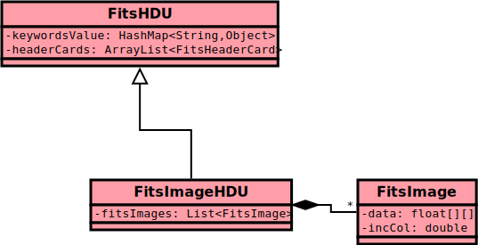

In this document we go through some of the most important Java data structures used in OImaging. The goal is to be able to discuss OImaging development without needing to dive in the source code.

In a lot of cases it is correct to call this structure “an image”.
A FitsImageHDU is a Fits HDU with Header and Data sections, with image extension (see Fits guide).
It contains a list of FitsImage. This list often has only one element, that is why we call FitsImageHDU an “image”. See section FitsImage for more information about these.
It contains keywords, see section FitsHDU, since FitsImageHDU herits from it. An example is the keyword HDU_NAME.
Location: OiTools
This structure contains keywords and header cards. The difference between these two is that keywords have a description, see class KeywordMeta.
A keyword is identified by a String name. Its value can take one of the following types: String, Double, Integer, Boolean.
A header card has a String name and a String value. In practice the String value can be parsed as another type, but then you are supposed to declare it as a keyword.
Location: OiTools
Contains the data of an image, by a two dimensions array of type float (4 octets).
Contains the meta-data of the image, by several fields, for example incCol, of type double, which stores the absolute coordinate increment along the column axis, in the metric radians by pixel.
You should note that this meta-data contains duplicate information with the keywords of the parent FitsImageHDU. For example, the keyword CRPIX1 and the field pixRefCol must always be equals.
A FitsImage always belong to exactly one FitsImageHDU. The field fitsImageHDU references the parent FitsImageHDU.
Location: OiTools
An OI Fits file, but parsed as a Java Object.
It does not have to be associated to an actual file on the disk, there is no mechanism of automatic synchronization. There is the class OIFitsWriter to parse an OI Fits file to an OIFitsFile object, and the class OIFitsLoader to export an OIFitsFile object to OI Fits file.
The OIFitsFile contains:
FitsImageFile:
FitsImageHDUNote that as the OI FITS format description says, the input and output parameters of the reconstruction are not stored as keywords of images, but belong to their own HDU. In the Java object the reconstruction parameters HDUs are represented by the class ImageOiParam.
Location: OiTools
A ServiceResult is a result of a computation.
Consider that it is used in two different moments: before the computation takes places, and after the computation is completed.
Before the computation, the ServiceResult is filled with three file paths:
OI Fits file given as input to the algorithm.OI Fits file given as output by the algorithm.The current time is also recorded as startTime.
After the computation, when the Add Result action is called, the result file and execution log file are loaded from the disk and parsed in Java objects, references in the ServiceResult fields oiFitsFile and executionLog. The time is also recorded as endTime. The field index is filled.
Location: OImaging
This in the principal model (data structure) of OImaging. We can almost call it the “state of OImaging”.
Principaly, it contains:
OIFitsFile associated to the input form. When you click on Run, it will be written to a file and given to the algorithm.FitsImageHDU that the user can select for initial images and regulation images.ServiceResult, the results of previous computations.You can also find some additional state, for example the Boolean running which tells if there is a current compilation. You have also some duplicated state like the FitsImageHDU selectedInputImageHDU. This information could be retrieved from the OIFitsFile associated to the input form, but it is practical as a shortcut.
Location: OImaging